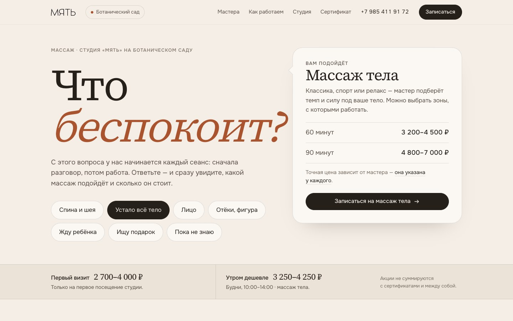
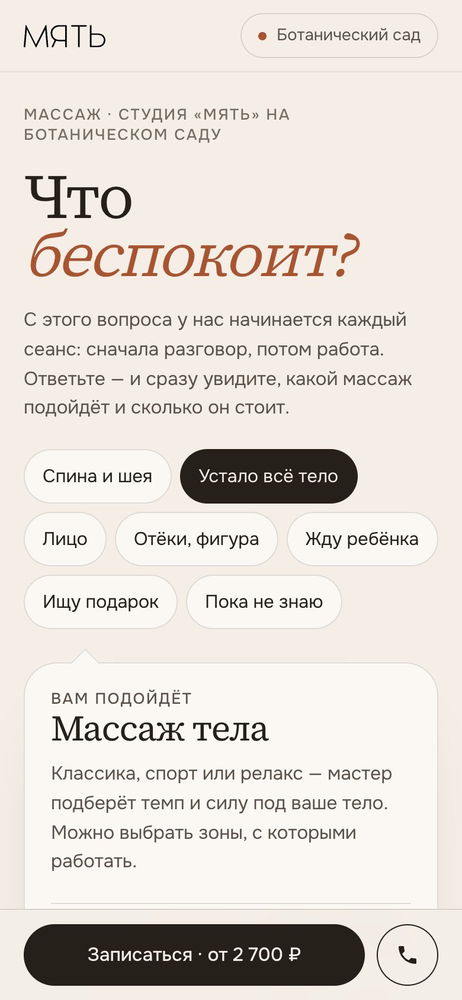

Концепт 1
Сначала разговор
Идея. Первый принцип студии — «сначала разговор, потом работа» — становится интерфейсом. Страница начинается с вопроса мастера «Что беспокоит?»; ответ сразу показывает подходящий массаж, длительность и цену. Ниже — мастера с точной ценой каждого, без вилок.
Кому подойдёт. Новым клиентам, которые не знают, какой массаж выбрать. Лучше всего решает главную проблему страницы.
Открыть прототип → Целиком: десктоп · телефон


